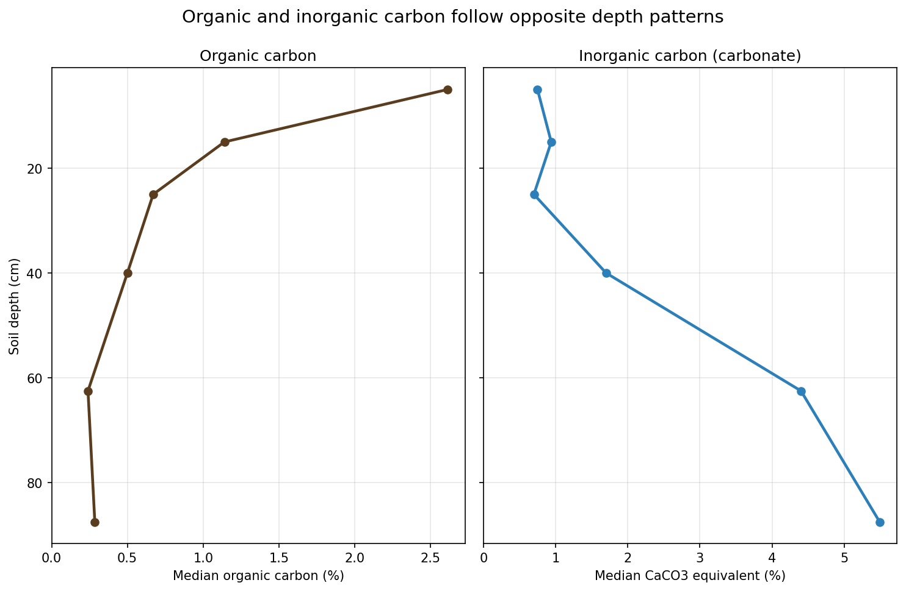
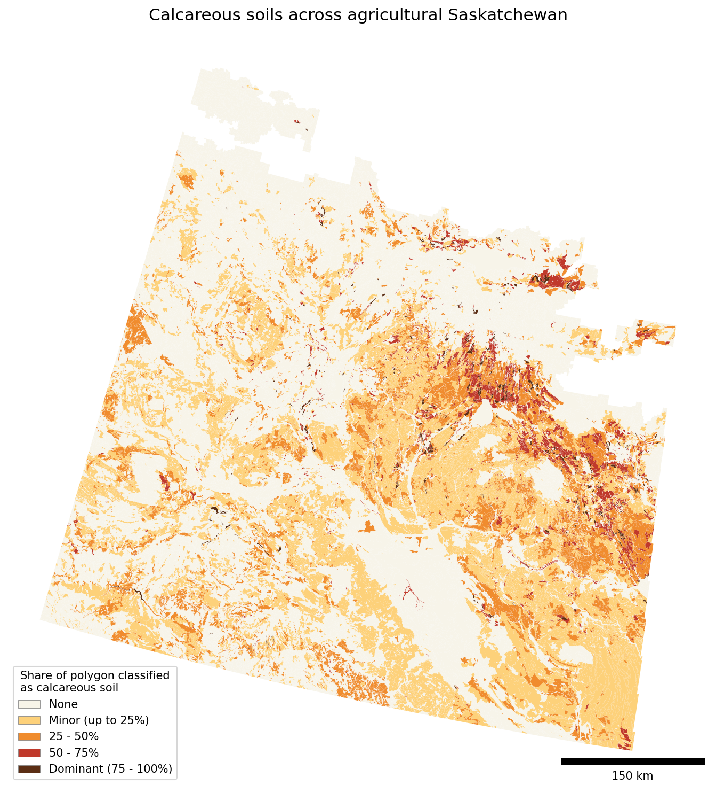
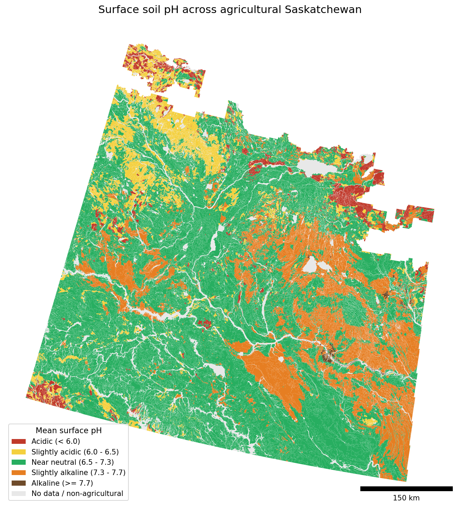

SOC, SIC, and Total Carbon: Measuring the Major Types of Soil Carbon
soil organic carbon, soil inorganic carbon, SOC, SIC, total soil carbon, dry combustion, acid fumigation, pressure calcimeter, loss on ignition, calcareous soils, soil carbon measurement, carbon accounting, MMRV
Soil carbon can be found in both organic and inorganic forms in soil. Total soil carbon is the sum of two very different pools, and they are controlled by different mechanisms.
Two pools, not one
Soil organic carbon (SOC) is the carbon held in organic matter: plant residues, roots, microbial products, and the stable organic carbon built up in soil over time. This is the pool that responds to management that adds organic carbon to the soil, and it is typically the pool that carbon programs are trying to build.
Soil inorganic carbon (SIC) is carbon held in carbonate minerals, essentially ground-up limestone in the soil. Its presence is driven largely by parent material, precipitation, and profile age. In dry and calcareous soils, including large parts of the Canadian Prairies and other semi-arid regions, the inorganic pool can be several times larger than the organic one. While SIC can also be influenced by management practices, the mechanisms that affect SIC and SOC are different. Detecting changes in either reliably requires isolating them with the right measurements.
Total carbon is simply the two added together:
Total carbon = SOC + SIC
The two pools form, move, and change for different reasons and on different timescales, and they are not distributed the same way through the soil profile. Organic carbon is concentrated near the surface and falls off with depth. Carbonate is the opposite: typically low at the surface and accumulates as you move deeper in the profile.

Treating these two pools as interchangeable, or collapsing them into a single “soil carbon” number, is where problems begin.
Why the measurement method matters
A standard laboratory dry combustion analysis measures all of the carbon in a sample at once: organic plus inorganic, reported as total carbon. In acidic soils that contain little or no carbonate, total carbon is essentially all organic, so this is fine. The complication arises in calcareous soils, where a substantial share of the carbon is carbonate, and measuring everything together no longer tells you the organic carbon.
And calcareous soils are not rare in the Canadian Prairies. Across agricultural Saskatchewan, a large share of soils are mapped as calcareous, concentrated through the central and eastern plains. These soils have significant SIC contents in the B horizon (near-surface subsoil), and sometimes the A horizon (the topsoil).

A calcareous classification is a direct indicator, but it does not catch everything. The Canadian soil classification has no calcareous Vertisol subgroup, so heavy clay Vertisols are never flagged as calcareous even when they carry carbonate. Soil pH captures these cases: alkaline soils are where carbonate, and therefore inorganic carbon, is most likely to be present. The calcareous classification and soil pH together give a good idea where inorganic carbon is likely to matter for soil carbon measurements.

Measuring SOC and accounting for SIC
Every method starts from the same reality: the instruments measure carbon, and on calcareous soils that means organic and inorganic carbon together. What the methods differ on is how they separate the two.
Dry combustion: the base measurement. Dry combustion elemental analysis is the standard way to measure soil carbon. The sample is heated in oxygen to a high temperature (roughly 950 to 1,050 °C), all of its carbon is converted to CO2, and the CO2 is measured. The result is total carbon. On acidic, carbonate-free soils that total is effectively all organic, so dry combustion gives SOC directly. On calcareous soils it does not, and one of the following is needed to recover the organic fraction.
Remove the carbonate first: acid fumigation or HCl washing. If the carbonates are destroyed before combustion, what remains to burn is organic carbon, so dry combustion then measures SOC directly. Two common approaches:
- Acid fumigation. Samples are exposed to concentrated hydrochloric acid vapour in a sealed chamber, which reacts with and removes carbonates in place before the sample is combusted. It is suitable for small samples used in elemental analysers and reduces the risk of acid removal of some of the SOC. However, incomplete removal of SIC can be a concern.
- Acid washing (direct acidification). Dilute HCl is added directly to the sample to remove the carbonates, after which the sample is dried and combusted. It is effective but more hands-on, and care is needed: washing can leach some soluble organic carbon, and dolomite reacts more slowly than calcite, so incomplete reaction is also a risk. This method can leave HCl residues that are corrosive to laboratory instruments.
Both of these methods are difficult to get working consistently, and require well-controlled procedures and skilled laboratory technicians.
Measure the carbonate separately: pressure calcimeter. Rather than removing the carbonate, you can measure it. In a pressure calcimeter the sample is reacted with HCl in a sealed vessel, and the CO2 released from the carbonate raises the pressure, which is measured and converted to carbonate content (CaCO3 equivalent), i.e., the inorganic carbon. Soil organic carbon is then obtained by difference: total carbon from dry combustion minus inorganic carbon from the calcimeter. It is simple, inexpensive, and robust, and it has the advantage of giving you the SIC value explicitly, which is the number you want to be able to track on its own.
Separate them in one run: temperature-ramping methods. Organic and inorganic carbon release their CO2 at different temperatures: organic carbon combusts at lower temperatures, while carbonates decompose only at higher ones. Temperature-ramped or stepped-combustion instruments exploit this by measuring the CO2 evolved in separate temperature windows, so a single analysis can yield both SOC and SIC with no chemical pretreatment. The convenience is real, but the temperature windows can overlap (some stable organic matter burns hot, and some carbonate decomposes cooler than expected), so these methods need careful calibration and can misassign carbon between the pools if applied without it.
A cheaper alternative to elemental analysis, loss-on-ignition (LOI), estimates organic matter from the weight a sample loses on heating. It is an estimate rather than a direct carbon measurement, and it is biased in high-clay soils because structural water is driven off along with organic matter. It has its uses, but it is not a substitute for a direct, carbonate-aware carbon measurement when the goal is to quantify SOC accurately. While LOI data may be suitable for agronomic decision making, the precision is much too low for soil carbon change quantification.
Whichever route you take, the goal is the same: report soil organic carbon and soil inorganic carbon as separate numbers, not a single total.
Why this matters for carbon accounting
The practices that most (but not all) carbon programs credit, such as reduced tillage, cover cropping, and improved rotations, act on the organic pool. Soil organic carbon is what those practices build, and it is what a project is claiming to have changed.
Soil inorganic carbon can change too, but usually for entirely separate reasons: irrigation, liming, acidification, and the dissolution or precipitation of carbonates, all of which operate on their own timescales and have little to do with the above management practices primarily influencing SOC. Inorganic carbon was long treated as inert, but recent work shows it is not necessarily stable either, particularly in drylands under a changing climate.
Put those two facts together and the risk becomes clear. If you track total carbon as your indicator of change, a shift in the carbonate pool (or uncertainty in measurement) can mask or exaggerate the change in organic carbon that you are actually trying to measure, in either direction. On a calcareous soil where SIC dwarfs SOC, even a modest change or laboratory measurement error in carbonate content can swamp the SOC signal entirely. The result is a baseline, and a credited change, that may reflect inorganic carbon dynamics, or measurement uncertainty, rather than the organic sequestration the project set out to achieve.
The takeaway
When evaluating change in soil carbon, measure and report soil organic carbon and soil inorganic carbon separately, rather than relying on total carbon. On acidic soils the distinction may not matter much. On calcareous soils, which cover a large share of the Canadian Prairies, it is essential, and getting it wrong propagates straight into the baseline and the credited change. It is a small methodological choice at sampling and lab time, and a large one by the time the numbers are used to estimate carbon stock changes.